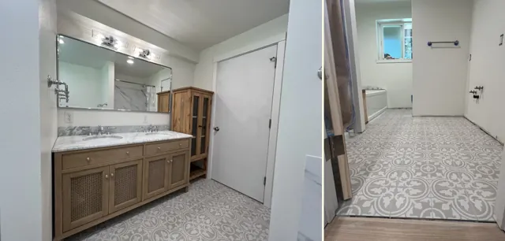
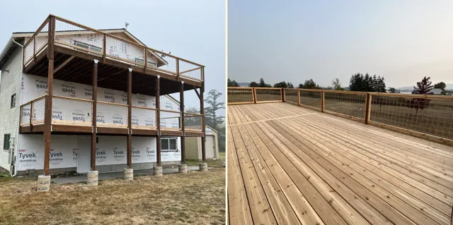
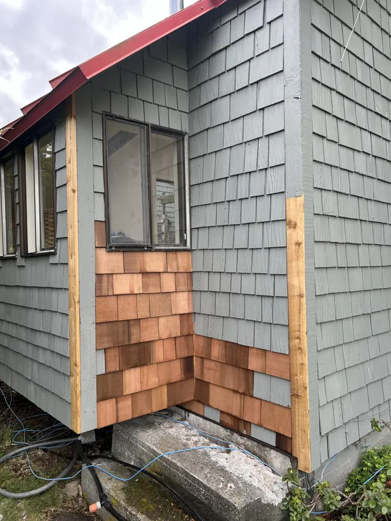
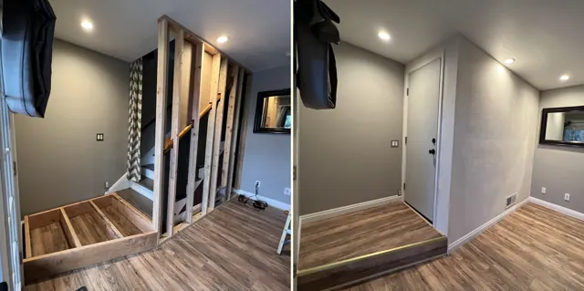
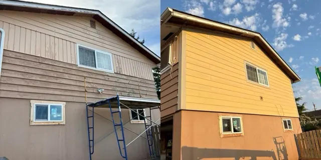

Recent projects
A look at work we've done for homeowners around Anacortes and the north Puget Sound. Select a photo to see it larger.











Have a project in mind?
Tell us what you're thinking and we'll come take a look. Quotes are free.